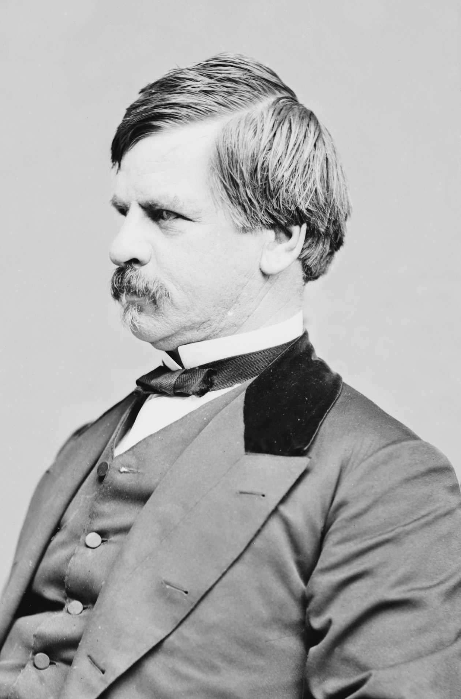

|
The Shenandoah Valley held great logistical and strategic
significance during the Civil War. With the Blue Ridge
Mountains on the east and the more imposing Alleghenies to
the west, the Valley runs southwest to northeast and drops
gently in its course to meet the Potomac, which means that
an individual traveling to the Potomac goes "down the

Maj. Gen. (later Lt. Gen.) Stonewall Jackson
|
Valley"--an odd circumstance in a world where north is
almost always "up." The premier grain growing area in
Virginia during much of the antebellum period, the Valley
produced a variety of agricultural products that helped
sustain Confederate forces in Virginia. It also loomed
large as a strategic avenue through which either side could
mount a threat to the western parts of Washington and
Richmond.
The 1862 Valley campaign of Thomas J. "Stonewall" Jackson
had its origins in Robert E. Lee's desire to limit the size
of the Union threat against Richmond. In late April 1862,
George B. McClellan's 100,000 man strong Army of the Potomac
advanced toward the Confederate capital up the Virginia
Peninsula between the York and James rivers. Fifty miles
north of Richmond lay another major Federal force commanded
by General Irvin McDowell. Smaller armies under Nathaniel
P. Banks in the lower Shenandoah Valley and John C. Frémont
in the Alleghenies farther west completed the roster of
Union threats in Virginia. Lee functioned as Jefferson
Davis's principal military adviser, and he wanted
"Stonewall" Jackson, who commanded a modest force in the
Valley, to pin down all Federals west of the Blue Ridge;
otherwise, Frémont and Banks could potentially join McDowell
at Fredericksburg for an advance against Richmond in
conjunction with McClellan. Jackson had taken an initial
step toward this with an offensive movement that resulted in
the battle of First Kernstown, just south of Winchester, on
March 23, 1862. A Confederate tactical defeat, First
Kernstown nonetheless had persuaded the Federals to hold
Banks and Frémont in the Valley, which in turn set up
subsequent Confederate success.
Jackson soon demonstrated how a resourceful commander of
an inferior force could use speed and imagination to achieve
great results. On May 8, 1862, he concentrated part of his
troops at the village of McDowell, in the Alleghenies west
of Staunton, defeating the advance guard of Frémont's army
and forcing its retreat into the wilds of western Virginia.
Returning to the Valley, Jackson marched northward and
captured several hundred Federals in a minor battle at Front
Royal on May 23. Two days later he won the battle of First
Winchester against Banks, driving the Federals toward the
Potomac River and capturing a huge quantity of military
supplies. By May 29, Jackson's troops skirmished with
Federals near Harpers Ferry, having cleared most of the
lower Valley of Union forces.
Near Harpers Ferry, Jackson's force occupied a vulnerable
position. From Washington, Abraham Lincoln sensed an
opportunity to deliver a decisive blow. He envisioned a
three-pronged pincers movement to isolate Jackson in the
lower Valley. Frémont would march from the west, a division
from McDowell's command under James Shields would move east
from Front Royal, and Banks would apply pressure from the
|

Maj. Gen. Nathaniel P. Banks
|
north. "I think the evidence now preponderates that Ewell
and Jackson are still about Winchester," commented the
president to General McDowell. "Assuming this, it is, for
you a question of legs. Put in all the speed you can. I
have told Frémont as much, and directed him to drive at them
as fast as possible." But Jackson pushed his men to the
limit and, aided by incredibly slow movements by all three
Federal commanders, escaped the trap and marched to the
southern end of Massanutten Mountain near Harrisonburg.
There he defeated part of Frémont's force in the battle of
Cross Keys on June 8. The next day, he turned back
Shields's command in the battle of Port Republic. Frémont
and Shields soon retreated northward on both sides of
Massanutten Mountain, and Jackson moved to reinforce Lee's
army outside Richmond.
Jackson had accomplished his strategic goals quite
effectively. He pinned down Banks and Frémont and convinced
the Federals to hold McDowell at Fredericksburg, thereby
denying McClellan thousands of reinforcements. None of his
battles had been a tactical masterpiece; indeed, he had
struggled to win despite having superior numbers at McDowell
and again at Port Republic, and Banks's soldiers had escaped
from the battlefield at First Winchester with minimal
damage. Still, these small victories reached a Confederate
populace starved for good news from the military front and
made Jackson a popular southern hero.
Casualties in the 1862 Valley campaign were modest
compared to the bloodier battles of the Civil War. They
totaled just fewer than 5,500 Federals (more than half of
whom were prisoners) and just more than 2,750 Confederates.
They broke down as follows by battle: Kernstown, 590 U.S.
and 720 C.S.; McDowell, 250 U.S. and 500 C.S.; Front Royal,
900 U.S. and 50 C.S.; First Winchester, 2,019 U.S. and 400
C.S.; Cross Keys, 685 U.S. and 690 C.S.; Port Republic,
1,000 U.S. and 800 C.S.
Source: Joan Waugh, ed., Facts on File Encyclopedia of American
History: Civil War and Reconstruction, 1856 to 1869 (New York: Facts on
File, 2003), 316-317.
|